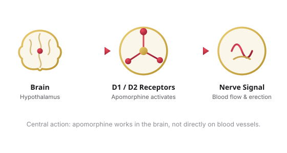

Every erection begins as a signal in the brain. Long before blood flows, the central nervous system has to register arousal and send the command outward. Dopamine is one of the key neurotransmitters carrying that command — and apomorphine is a molecule that imitates it almost perfectly.1
What "dopamine agonist" actually means
An agonist is a key that fits a receptor's lock and turns it. Apomorphine fits the dopamine receptors — chiefly the D2 receptor family (D2, D3 and D4 subtypes), with additional activity at D1 — and switches them on as if natural dopamine had arrived.2 Despite the name, apomorphine is not an opioid; it shares no meaningful activity with morphine and was simply first synthesized from it chemically.3
Where it works: the hypothalamus
The action centers on two small hubs deep in the brain — the paraventricular nucleus (PVN) and the medial preoptic area (MPOA) of the hypothalamus. Stimulating dopamine receptors in the PVN reliably induces penile erection in preclinical models, and apomorphine acts directly on the dopaminergic and oxytocinergic neurons living there.4

The signal cascade, step by step
- Integration. Visual, tactile and imaginative arousal cues converge in the medial preoptic area.4
- Dopamine receptors fire. Apomorphine activates D2-family receptors in the paraventricular nucleus — the pro-erectile effect is cut ~80% by a D2/D3 blocker, confirming these receptors carry most of the signal.4
- Oxytocin is released. That receptor activation triggers central oxytocin release; an oxytocin-receptor antagonist almost completely abolishes the erection, marking oxytocin as the critical relay.4
- Nitric oxide, then blood flow. The descending signal ends with nitric oxide release in the corpus cavernosum, producing the vasodilation and blood flow of an erection.4
Central vs. peripheral: two different doors
PDE5 inhibitors (sildenafil, tadalafil) work peripherally — they preserve nitric-oxide signaling inside the penis to sustain an erection once arousal has already started. Apomorphine works centrally, generating the arousal signal itself. This is why some compounded formulas pair the two: apomorphine to open the central door, a PDE5 inhibitor to hold the peripheral one open.5
Why the sublingual route fits the chemistry
Swallowed apomorphine is largely destroyed by stomach acid and first-pass liver metabolism, giving poor bioavailability. Dissolved under the tongue, it bypasses that first pass and reaches the brain within minutes — which is why the effective ED dose is a small 2–3 mg and onset is fast.51
Keep exploring
Sources
- Briganti A, et al. A comparative review of apomorphine formulations for erectile dysfunction. Drugs & Aging, 2006;23(4):309–319. pubmed.ncbi.nlm.nih.gov/16732690
- Hsieh GC, et al. Dopamine D4 receptors and the regulation of penile erection. Behavioural Brain Research (ScienceDirect)
- Ro Health Guide. Apomorphine for ED: mechanism and comparison to PDE5 inhibitors. ro.co/erectile-dysfunction/apomorphine-for-ed
- Melis MR, Argiolas A, et al. Stimulation of dopamine receptors in the paraventricular nucleus induces penile erection: involvement of central oxytocin. pubmed.ncbi.nlm.nih.gov/17164075
- Rugiet. What is apomorphine ED medication? rugiet.com/blog/erectile-dysfunction/what-is-apomorphine-ed-medication